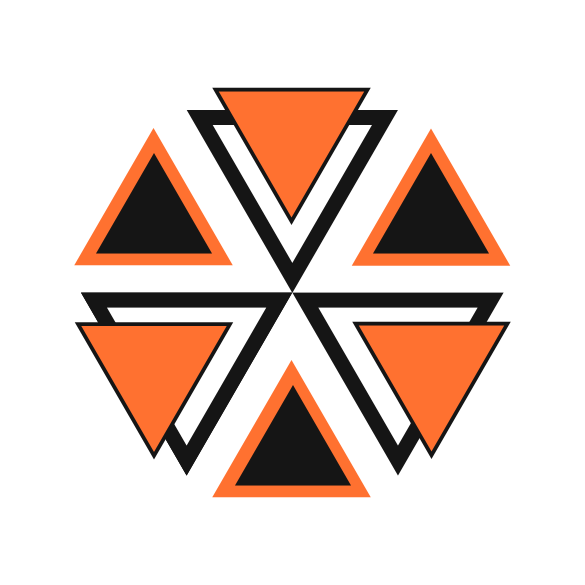

New work is underway.
This page will document serious Navikarana projects as they take shape. There are no public projects to list here yet.
For now, my engineering work and writing live at loke.sh. Public code from the lab belongs on GitHub.

Navikarana LabsNavikarana Labs
Research and engineering, developed independently.
New work is underway.
This page will document serious Navikarana projects as they take shape. There are no public projects to list here yet.
For now, my engineering work and writing live at loke.sh. Public code from the lab belongs on GitHub.